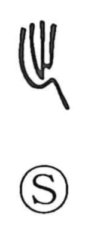

出

Uncategorized
Kun: deru, dasu, izuru, idasu | On: shutsu, sui
to go out ・ to leave ・ to depart ・ to put out
Explanation
Shirakawa takes this as a pictograph of forceful footsteps pressed into the ground as one steps forward. The core is 止, the footprint, with a bent trailing stroke behind it to show the deep impression left by a strongly planted heel. From this vivid image arise the senses of setting out, going out, and going forth. In some bronze forms an additional sai element appears—the covenant vessel that held slips bearing prayers to the gods—suggesting that departure was accompanied by a rite of praying for safe travel, marked by leaving firm heel-traces as one set off.